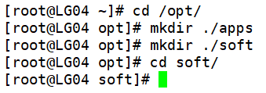
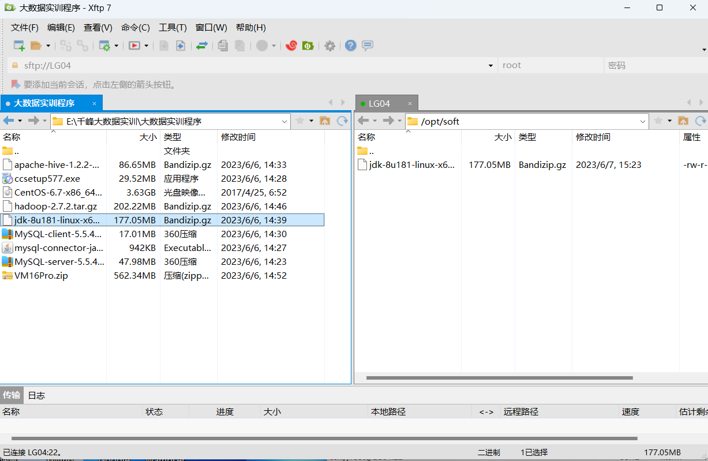
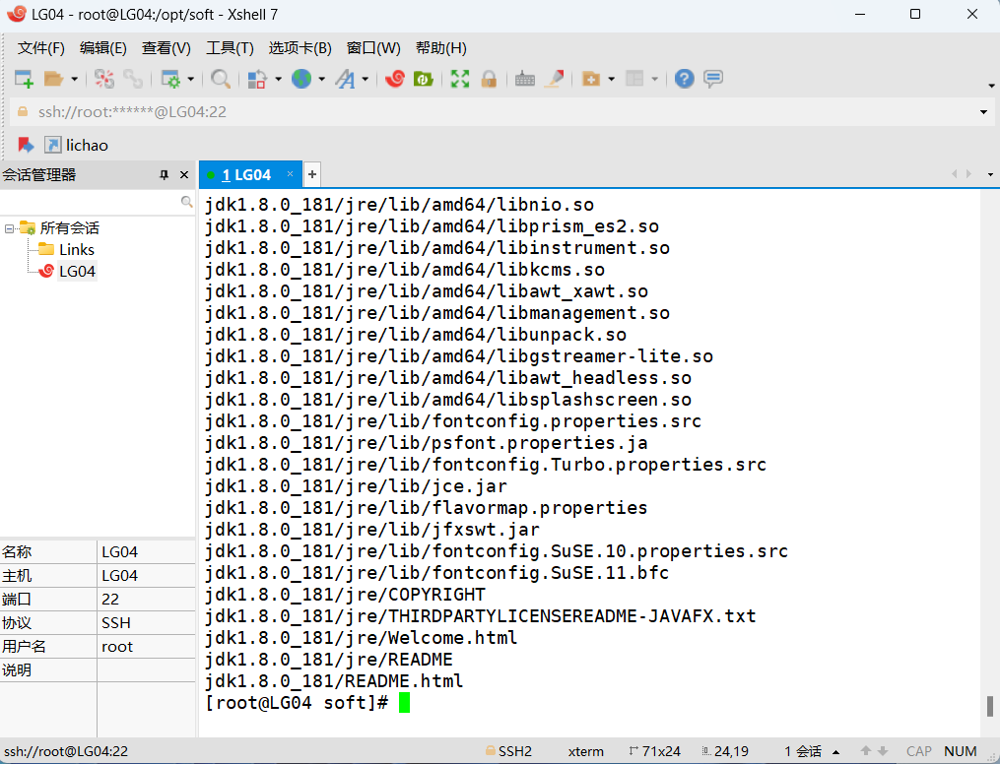
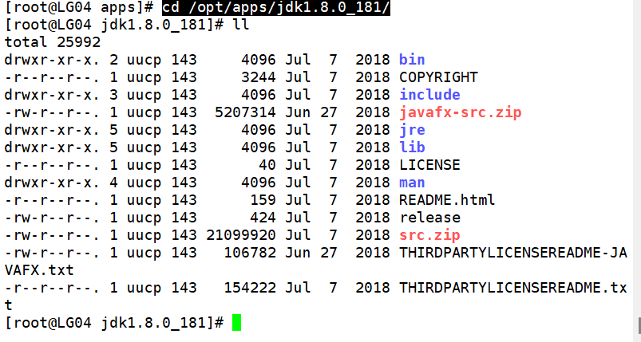
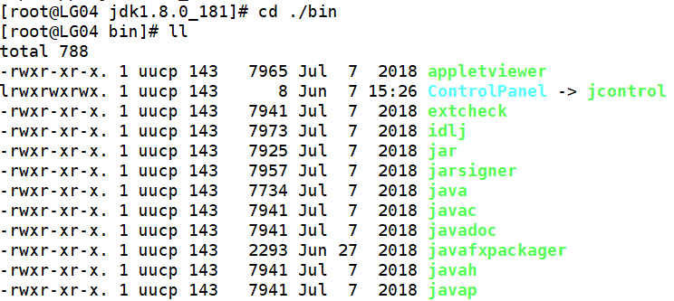
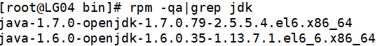
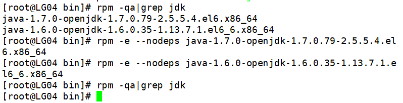
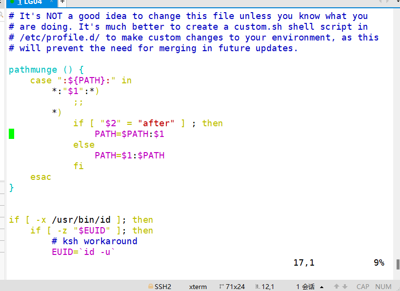
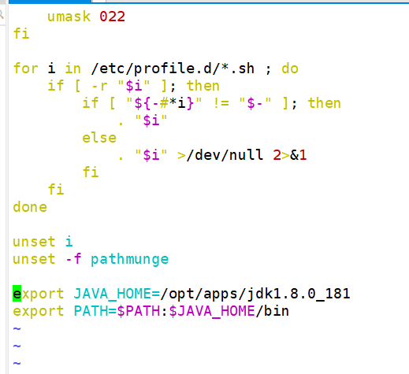
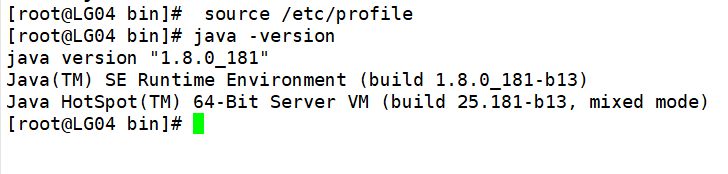

配置Java环境
2025-09-26
安装JDK
在/opt下创建两个目录
cd /opt/
mkdir ./apps
mkdir ./soft
cd soft

将jdk放入 /opt/soft目录中
解压到apps
tar -zxvf jdk-8u181-linux-x64.tar.gz -C /opt/apps/

进入opt下的jdk
cd /opt/apps/jdk1.8.0_181/

进入bin
cd ./bin

drwxrwxrwx 第一位表示文件类型 ，24表示管理员权限，57表示组员权限，8~10表示所属者权限 r:读 w:改 x:执行
查找需要卸载的jdk
rpm -qa|grep jdk

卸载
rpm -e --nodeps java-1.7.0-openjdk-1.7.0.79-2.5.5.4.el6.x86_64
rpm -e --nodeps java-1.6.0-openjdk-1.6.0.35-1.13.7.1.el6_6.x86_64

配置环境变量
编辑profile文件
vim /etc/profile

在最下方添加以下内容
export JAVA_HOME=/opt/apps/jdk1.8.0_181
export PATH=$PATH:$JAVA_HOME/bin

刷新profile文件
source /etc/profile
